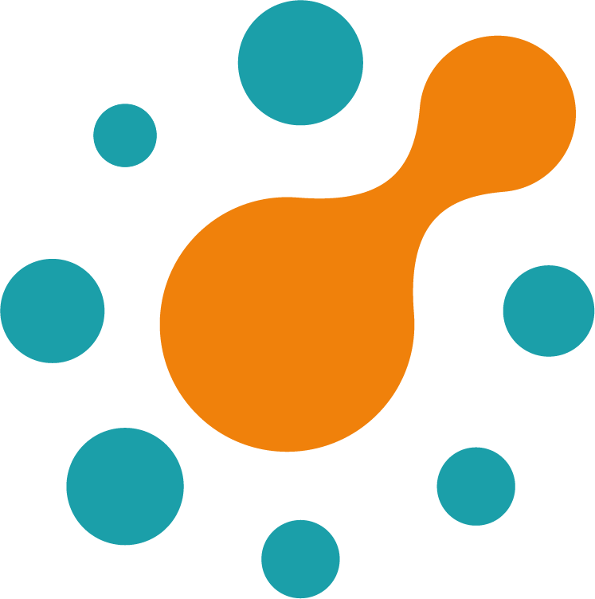

<div class="ui visible inverted left vertical sidebar menu">
  <div class="ui center aligned segment">
    
  </div>

  <a routerLink="propiedades" routerLinkActive="active" class="item">
    <i class="home icon"></i>
    Propiedades
  </a>
  <a routerLink="remates" routerLinkActive="active" class="item">
    <i class="legal icon"></i>
    Remates
  </a>
  <a routerLink="agua" routerLinkActive="active" class="item">
    <i class="theme icon"></i>
    Derechos de Agua
  </a>
  <a routerLink="minera" routerLinkActive="active" class="item">
    <i class="industry icon"></i>
    Pertenencias Mineras
  </a>
  <a routerLink="cuenta" routerLinkActive="active" class="item">
    <i class="user icon"></i>
    Suscripciones
  </a>
  <a (click)="logout()" class="item">
    <i class="sign out icon"></i>
    Cerrar Sesión
  </a>
</div>
<div class="pusher">
  <div class="ui container">
    <router-outlet></router-outlet>
  </div>
</div>